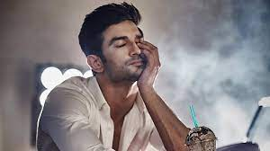

21 January 1986 - 14 June 2020
"No matter what you achieve, what you want to aspire to be, or how famous and powerful you become, the most important thing is whether you are excited about each and every moment of your life because of your work and people around you."
Sushant Singh Rajput (21 January 1986 - 14 June 2020) was an Indian actor known for his work in Hindi cinema. He starred in a number of commercially successful Hindi films such as M.S. Dhoni: The Untold Story (2016), Kedarnath (2018) and Chhichhore (2019). He received a Screen Award and was nominated for the Filmfare Awards on three occasions. He began his acting career after dropping out of his engineering course at the Delhi College of Engineering and entering the theatre industry in Mumbai.